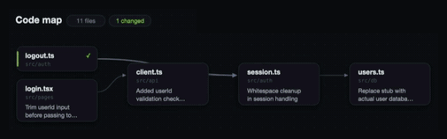
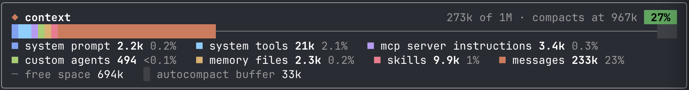
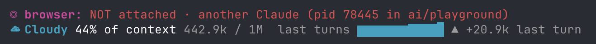
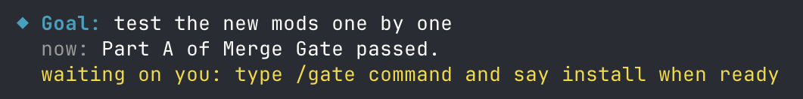
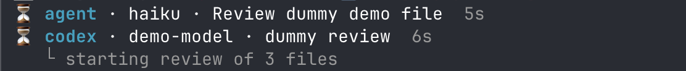
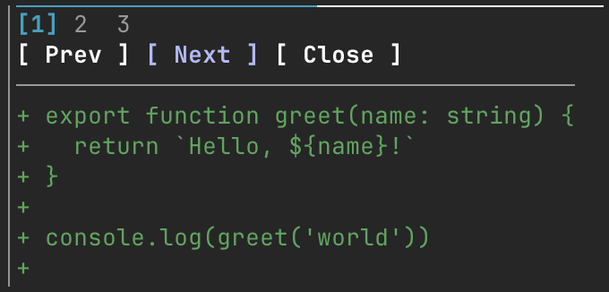
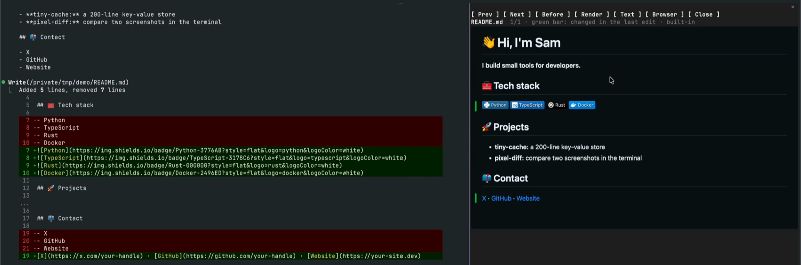
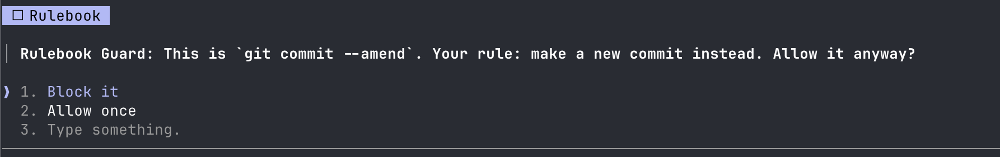

Mods for Claude Code
Make Claude Code show what it's doing. Live lines above the prompt, guards, panes and games. Each mod is a small plugin built on Claude Code's function hooks. Install only the ones you want.
Install
Add the marketplace once.
claude plugin marketplace add hamzafer/claude-code-modsInstall any mod by name.
claude plugin install context-bar@claude-code-modsRestart Claude Code.
Needs Claude Code 2.1.287 or newer. A few mods need more, like Chrome, gh or a connector. Each mod's page says which. To try one without installing, clone the repo and run claude --plugin-dir mods/context-bar.
All 21 mods
See what's happening
Lines above the prompt and panes that show what Claude is doing.
- mission-controlLive map of agents, tool calls and the code they touch
/mission
- context-barYour context window as one stacked bar, a color per category
/context-bar
- token-weatherContext fill from Clear to Compact soon, plus a prompt-cache countdown

- where-am-iGoal, doing now, waiting on you, next step
/where
- next-steps2 or 3 likely next prompts after each turn, one key to draft one
- usage-meter5-hour and 7-day plan usage, the reset countdown and the session's cost
- openai-balanceYour OpenAI API credit, today's spend and the last call's model and key
/openai-balance - agent-radarOne live line per running subagent
/radar - review-watchOne live line per running code review, Codex or a review subagent

- browser-lanesWhether this session has a browser, and who holds it
/browser
- prayer-timesThe current prayer and how long is left, the next one, and zawal
/prayers - replay-theaterSteps through the last turn's edits, one diff at a time
/replay
- md-previewMarkdown rendered like GitHub, before and after side by side
/md
Guard your repo
Stops a risky command and shows what it would change first.

Fork and adapt
Built around one person's tools and rules. Fork them and change the rules to yours.
- glanceNext meeting, PRs, Linear issues and Slack DMs in one line
/glance - merge-gateHolds gh pr merge until CI is green and Codex reviewed once
/gate - rulebook-guardRewrites em dashes, asks before --amend, unformatted pushes and personal info

- session-saverSaves where you left off and shows it on resume
/park
For fun
Opt-in. Nothing opens until you ask.
Build your own
A mod is a plugin made of function hooks: it can draw a line above the prompt, open a pane, show a toast or stop a tool call. Start from Getting started with Claude Code mods. The checks and the new-mod checklist are in CONTRIBUTING.md.